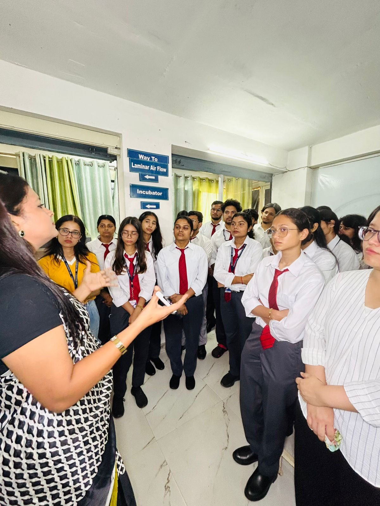

Bioinformatics Training Program Open

Bioinformatics sits at the crossroads of biology, computer science and statistics. As biological data grows explosively, the demand for professionals who can analyse genomes, proteins and large-scale datasets has never been higher. Applications are now open for our Bioinformatics Training Program.
Program Highlights
- Essential biology and molecular data fundamentals
- Working with DNA, RNA and protein sequence data
- Popular tools and databases used in modern research
- Introduction to Python for biological data analysis
- Interpreting results and preparing research-grade reports
Who Is It For
Students and researchers from biotechnology, microbiology, genetics, biochemistry and related fields who want to add computational skills to their profile. Recent graduates preparing for research careers and industry roles will also benefit.
Learning Outcomes
By the end of the program, participants will be able to retrieve biological data, run standard analyses, interpret their results and communicate findings clearly. These are exactly the skills sought after in research labs, pharma companies and AI-driven biotech startups.
How to Apply
Applications are reviewed on a rolling basis. Contact our team to receive the detailed brochure, eligibility criteria, schedule and fee structure.